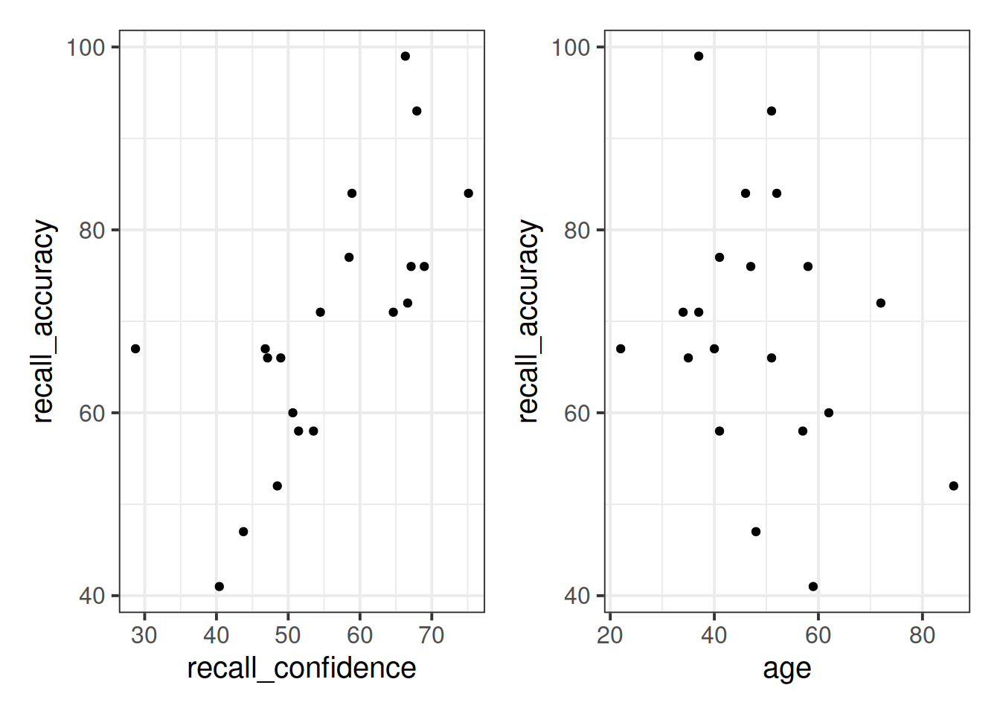

Covariance, Correlation, and Modelling
Reading: Covariance & Correlation
Our data for this walkthrough is from a (hypothetical) study on memory. Twenty participants studied passages of text (c500 words long), and were tested a week later. The testing phase presented participants with 100 statements about the text. They had to answer whether each statement was true or false, as well as rate their confidence in each answer (on a sliding scale from 0 to 100). The dataset contains, for each participant, the percentage of items correctly answered, and the average confidence rating. Participants’ ages were also recorded.
Let’s take a look at the relationships between the percentage of items answered correctly (recall_accuracy) and participants’ average self-rating of confidence in their answers (recall_confidence):
library(tidyverse)
library(patchwork)
recalldata <- read_csv("https://uoepsy.github.io/data/recalldata.csv")
ggplot(recalldata, aes(x=recall_confidence, recall_accuracy))+
geom_point() +
ggplot(recalldata, aes(x=age, recall_accuracy))+
geom_point()
These two relationships look quite different.
- For participants who tended to be more confident in their answers, the percentage of items they correctly answered tends to be higher.
- The older participants were, the lower the percentage of items they correctly answered tended to be.
Which relationship should we be more confident in and why?
Ideally, we would have some means of quantifying the strength and direction of these sorts of relationship. This is where we come to the two summary statistics which we can use to talk about the association between two numeric variables: Covariance and Correlation.
Covariance
Covariance is the measure of how two variables vary together. It is the change in one variable associated with the change in another variable.
For samples, covariance is calculated using the following formula:
\[\mathrm{cov}(x,y)=\frac{1}{n-1}\sum_{i=1}^n (x_{i}-\bar{x})(y_{i}-\bar{y})\]
where:
- \(x\) and \(y\) are two variables; e.g.,
ageandrecall_accuracy; - \(i\) denotes the observational unit, such that \(x_i\) is value that the \(x\) variable takes on the \(i\)th observational unit, and similarly for \(y_i\);
- \(n\) is the sample size.
In R
We can calculate covariance in R using the cov() function.
cov() can take two variables cov(x = , y = ).
cov(x = recalldata$recall_accuracy, y = recalldata$recall_confidence)## [1] 118.0768

Correlation - \(r\)
You can think of correlation as a standardized covariance. It has a scale from negative one to one, on which the distance from zero indicates the strength of the relationship.
Just like covariance, positive/negative values reflect the nature of the relationship.
The correlation coefficient is a standardised number which quantifies the strength and direction of the linear relationship between two variables. In a population it is denoted by \(\rho\), and in a sample it is denoted by \(r\).
We can calculate \(r\) using the following formula:
\[
r_{(x,y)}=\frac{\mathrm{cov}(x,y)}{s_xs_y}
\]
We can actually rearrange this formula to show that the correlation is simply the covariance, but with the values \((x_i - \bar{x})\) divided by the standard deviation (\(s_x\)), and the values \((y_i - \bar{y})\) divided by \(s_y\):
\[
r_{(x,y)}=\frac{1}{n-1} \sum_{i=1}^n \left( \frac{x_{i}-\bar{x}}{s_x} \right) \left( \frac{y_{i}-\bar{y}}{s_y} \right)
\]
The correlation is the simply the covariance of standardised variables (variables expressed as the distance in standard deviations from the mean).
Properties of correlation coefficients
- \(-1 \leq r \leq 1\)
- The sign indicates the direction of association
- positive association (\(r > 0\)) means that values of one variable tend to be higher when values of the other variable are higher
- negative association (\(r < 0\)) means that values of one variable tend to be lower when values of the other variable are higher
- no linear association (\(r \approx 0\)) means that higher/lower values of one variable do not tend to occur with higher/lower values of the other variable
- The closer \(r\) is to \(\pm 1\), the stronger the linear association
- \(r\) has no units and does not depend on the units of measurement
- The correlation between \(x\) and \(y\) is the same as the correlation between \(y\) and \(x\)
In R
Just like R has a cov() function for calculating covariance, there is a cor() function for calculating correlation:
cor(x = recalldata$recall_accuracy, y = recalldata$recall_confidence)## [1] 0.6993654
Correlation Test
Now that we’ve seen the formulae for covariance and correlation, as well as how to quickly calculate them in R using cov() and cor(), we can use a statistical test to establish the probability of finding an association this strong by chance alone.
Hypotheses
Remember, hypotheses are about the population parameter (in this case the correlation between the two variables in the population - i.e., \(\rho\)).
Null Hypothesis
- There is not a linear relationship between \(x\) and \(y\) in the population.
\(H_0: \rho = 0\)
Alternative Hypothesis
- There is a positive linear relationship between \(x\) and \(y\) in the population.
\(H_1: \rho > 0\)
- There is a negative linear relationship between \(x\) and \(y\) in the population.
\(H_1: \rho < 0\)
- There is a linear relationship between \(x\) and \(y\) in the population.
\(H_1: \rho \neq 0\)
Test statistic
Our test statistic here is another \(t\) statistic, the formula for which depends on both the observed correlation (\(r\)) and the sample size (\(n\)):
\[t = r \sqrt{\frac{n-2}{1-r^2}}\]
\(p\)-value
We calculate the p-value for our \(t\)-statistic as the long-run probability of a \(t\)-statistic with \(n-2\) degrees of freedom being less than, greater than, or more extreme in either direction (depending on the direction of our alternative hypothesis) than our observed \(t\)-statistic.
Assumptions
- Both variables are quantitative
- Both variables should be drawn from normally distributed populations.
- The relationship between the two variables should be linear.
In R
We can test the significance of the correlation coefficient really easily with the function cor.test():
cor.test(recalldata$recall_accuracy, recalldata$recall_confidence)##
## Pearson's product-moment correlation
##
## data: recalldata$recall_accuracy and recalldata$recall_confidence
## t = 4.1512, df = 18, p-value = 0.0005998
## alternative hypothesis: true correlation is not equal to 0
## 95 percent confidence interval:
## 0.3719603 0.8720125
## sample estimates:
## cor
## 0.6993654
Cautions!
Correlation is an invaluable tool for quantifying relationships between variables, but must be used with care.
Below are a few things to be aware of when we talk about correlation.

Game: Guess the \(r\)
Take a break and play this “guess the correlation” game to get an idea of what different strengths and directions of \(r\) can look like.
(if the game is not showing, try http://guessthecorrelation.com/).
source: http://guessthecorrelation.com/
Exercises: Correlation
Sleep levels and daytime functioning
A researcher is interested in the relationship between hours slept per night and self-rated effects of sleep on daytime functioning. She recruited 50 healthy adults, and collected data on the Total Sleep Time (TST) over the course of a seven day period via sleep-tracking devices.
At the end of the seven day period, participants completed a Daytime Functioning (DTF) questionnaire. This involved participants rating their agreement with ten statements (see Table 1). Agreement was measured on a scale from 1-5. An overall score of daytime functioning can be calculated by:
- reversing the scores for items 4,5 and 6 (because those items reflect agreement with positive statements, whereas the other ones are agreement with negative statement);
- summing the scores on each item; and
- subtracting the sum score from 50 (the max possible score). This will make higher scores reflect better perceived daytime functioning.
The data is available at https://uoepsy.github.io/data/sleepdtf.csv.
| Item | Statement |
|---|---|
| Item_1 | I often felt an inability to concentrate |
| Item_2 | I frequently forgot things |
| Item_3 | I found thinking clearly required a lot of effort |
| Item_4 | I often felt happy |
| Item_5 | I had lots of energy |
| Item_6 | I worked efficiently |
| Item_7 | I often felt irritable |
| Item_8 | I often felt stressed |
| Item_9 | I often felt sleepy |
| Item_10 | I often felt fatigued |
Read in the data, and calculate the overall daytime functioning score, following the criteria outlined above. Make this a new column in your dataset.
Hints:
- To reverse items 4, 5 and 6, we we need to make all the scores of 1 become 5, scores of 2 become 4, and so on… What number satisfies all of these equations:
? - 5 = 1,? - 4 = 2,? - 3 = 3? - To quickly sum accross rows, you can use the
rowSums()function.
Calculate the correlation between the total sleep time (TST) and the overall daytime functioning score.
Conduct a test to establish the probability of observing a correlation this strong in a sample of this size assuming the true correlation to be 0.
Write a sentence or two summarising the results.
Open-ended: Think about this relationship in terms of causation.
Claim: Less sleep causes poorer daytime functioning.
Why might it be inappropriate to make the claim above based on these data alone? Think about what sort of study could provide stronger evidence for such a claim.
Things to think about:
- comparison groups.
- random allocation.
- measures of daytime functioning.
- measures of sleep time.
- other (unmeasured) explanatory variables.
Exercises: Functions and Models
The Scottish National Gallery kindly provided us with measurements of side and perimeter (in metres) for a sample of 10 square paintings.
The data are provided below:
sng <- tibble(
side = c(1.3, 0.75, 2, 0.5, 0.3, 1.1, 2.3, 0.85, 1.1, 0.2),
perimeter = c(5.2, 3.0, 8.0, 2.0, 1.2, 4.4, 9.2, 3.4, 4.4, 0.8)
)Plot the data from the Scottish National Gallery using ggplot().
We know that there is a mathematical model for the relationship between the side-length and perimeter of squares: \(perimeter = 4 \times \ side\).
Try adding the following line to your plot:
stat_function(fun = ~.x * 4)
Use our mathematical model to predict the perimeter of a painting with a side of 1.5 metres.
We do not have a painting with a side of 1.5 metres within the random sample of paintings from the Scottish National Gallery.
We predict the perimeter of an unobserved squared painting having a 1.5 metre side using the mathematical model.
You can obtain this prediction either using a visual approach or an algebraic one.
Consider now the relationship between height (in inches) and handspan (in cm). Utts and Heckard (2015) provides data for a sample of 167 students who reported their height and handspan as part of a class survey.
Read the handheight data into R, and investigate how handspan varies as a function of height for the students in the sample.
Do you notice any outliers or points that do not fit with the pattern in the rest of the data?
Comment on any main differences you notice between this relationship and the relationship between sides and perimeter of squares.
Using the following command, superimpose on top of your scatterplot a best-fit line describing how handspan varies as a function of height.
For the moment, the argument se = FALSE tells R to not display uncertainty bands.
geom_smooth(method = lm, se = FALSE)Comment on any differences you notice with the line summarising the linear relationship between side and perimeter.
The mathematical model \(Perimeter = 4 \times \ Side\) represents the exact relationship between side-length and perimeter of squares.
In contrasts, the relationship between height and handspan shows deviations from an “average pattern”. Hence, we need to create a model that allows for deviations from the linear relationship. This is called a statistical model.
A statistical model includes both a deterministic function and a random error term: \[ Handspan = \beta_0 + \beta_1 \ Height + \epsilon \] or, in short, \[ y = \underbrace{\beta_0 + \beta_1 \ x}_{f(x)} + \underbrace{\epsilon}_{\text{random error}} \]
The deterministic function need not be linear if the scatterplot displays signs of nonlinearity. In the equation above, the terms \(\beta_0\) and \(\beta_1\) are numbers specifying where the line going through the data meets the y-axis and its slope (rate of increase/decrease).
The line of best-fit is given by:1 \[ \widehat{Handspan} = -3 + 0.35 \ Height \]
What is your best guess for the handspan of a student who is 73in tall?
And for students who are 5in?

References
Utts, Jessica M, and Robert F Heckard. 2015. Mind on Statistics. Cengage Learning.
Yes, the error term is gone. This is because the line of best-fit gives you the prediction of the average handspan for a given height, and not the individual handspan of a person, which will almost surely be different from the prediction of the line.↩︎

This workbook was written by Josiah King, Umberto Noe, and Martin Corley, and is licensed under a Creative Commons Attribution 4.0 International License.